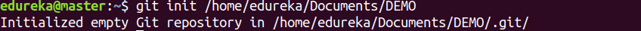
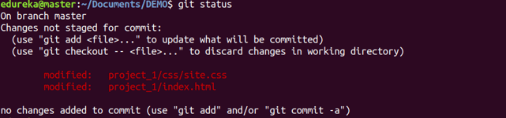
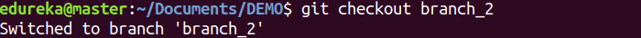
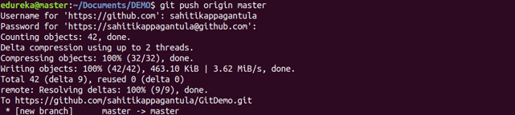
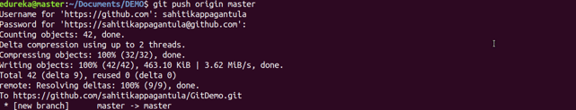
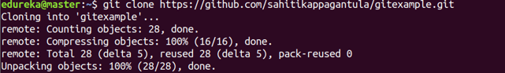

Homework #1
"VCS (Git, Github, gh-pages)
written by Yaroslava Drobilko
Git Commands - base
git config
Usage: git config –global user.name “[name]” Usage:
git config –global user.email “[email address]” This command sets the author name and email address respectively to be used with your commits.

git init
Usage: git init [repository name] This command is used to start a new repository.

git status
Usage: git status This command lists all the files that have to be committed.

git add
Usage: git add [file] This command adds a file to the staging area.
Usage:
git add * This command adds one or more to the staging area.
git commit
Usage: git commit -m “[ Type in the commit message]” This command records or snapshots the file permanently in the version history.

Usage:
git commit -a This command commits any files you’ve added with the git add command and also commits any files you’ve changed since then.

git log
Usage: git log This command is used to list the version history for the current branch.

git checkout
Usage: git checkout [branch name] This command is used to switch from one branch to another.

Usage:
git checkout -b [branch name] This command creates a new branch and also switches to it.

git branch
Usage:git branch This command lists all the local branches in the current repository.

Usage:
git branch [branch name] This command creates a new branch.

Usage:
git branch -d [branch name] This command deletes the feature branch.

git push
Usage:git push [variable name] master This command sends the committed changes of master branch to your remote repository.

Usage:
git push [variable name] [branch] This command sends the branch commits to your remote repository.

Usage:
git push –all [variable name] This command pushes all branches to your remote repository.

git pull
Usage:git pull [Repository Link] This command fetches and merges changes on the remote server to your working directory.

git merge
Usage:git merge [branch name] This command merges the specified branch’s history into the current branch.

git clone
Usage:git clone [url] This command is used to obtain a repository from an existing URL.
